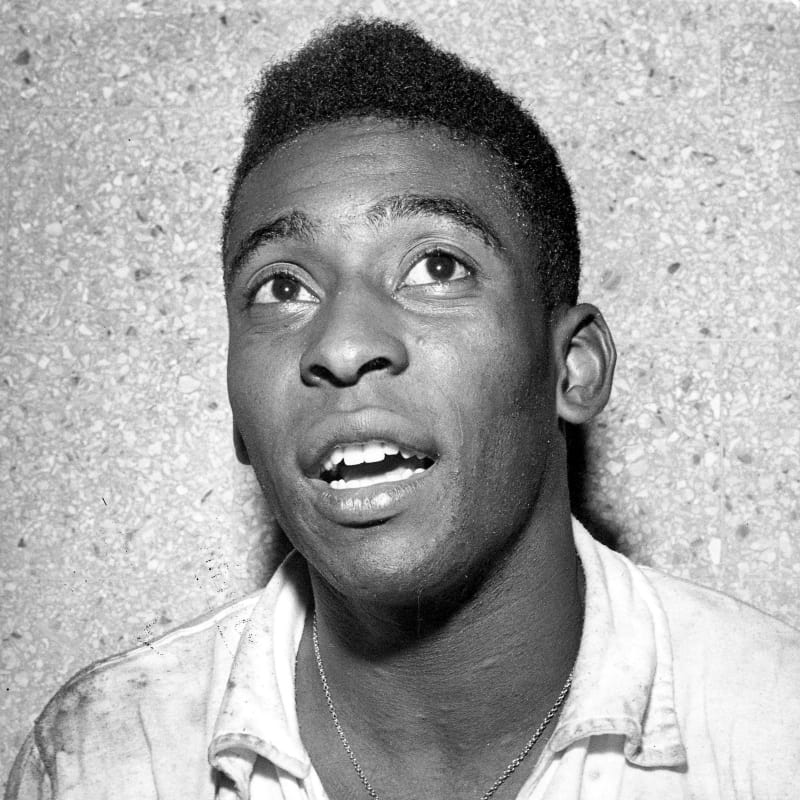

Pelé was born Edson Arantes do Nascimento on 23 October 1940, in Três Corações, Minas Gerais, Brazil, the son of Fluminense footballer Dondinho (born João Ramos do Nascimento) and Celeste Arantes. He was the elder of two siblings.[6] He was named after the American inventor Thomas Edison. His parents decided to remove the "i" and call him "Edson", but there was a mistake on the birth certificate, leading many documents to show his name as "Edison", not "Edson", as he is called. He was originally nicknamed "Dico" by his family. He received the nickname "Pelé" during his school days, when it is claimed he was given it because of his pronunciation of the name of his favourite player, local Vasco da Gama goalkeeper Bilé, which he misspoke but the more he complained the more it stuck. In his autobiography, Pelé stated he had no idea what the name means, nor did his old friends. Apart from the assertion that the name is derived from that of Bilé, and that it is Hebrew for "miracle" (פֶּ֫לֶא), the word has no known meaning in Portuguese.
Pelé grew up in poverty in Bauru in the state of São Paulo. He earned extra money by working in tea shops as a servant. Taught to play by his father, he could not afford a proper football and usually played with either a sock stuffed with newspaper and tied with a string or a grapefruit. He played for several amateur teams in his youth, including Sete de Setembro, Canto do Rio, São Paulinho, and Amériquinha.
He played for several amateur teams in his youth, including Sete de Setembro, Canto do Rio, São Paulinho, and Amériquinha. Pelé led Bauru Athletic Club juniors (coached by Waldemar de Brito) to two São Paulo state youth championships. In his mid-teens, he played for an indoor football team called Radium. Indoor football had just become popular in Bauru when Pelé began playing it. He was part of the first futsal (indoor football) competition in the region. Pelé and his team won the first championship and several others.
According to Pelé, futsal (indoor football) presented difficult challenges; he said it was a lot quicker than football on the grass and that players were required to think faster because everyone is close to each other in the pitch. Pelé credits futsal for helping him think better on the spot. In addition, futsal allowed him to play with adults when he was about 14 years old. In one of the tournaments he participated, he was initially considered too young to play, but eventually went on to end up top scorer with 14 or 15 goals."That gave me a lot of confidence", Pelé said, "I knew then not to be afraid of whatever might come".
